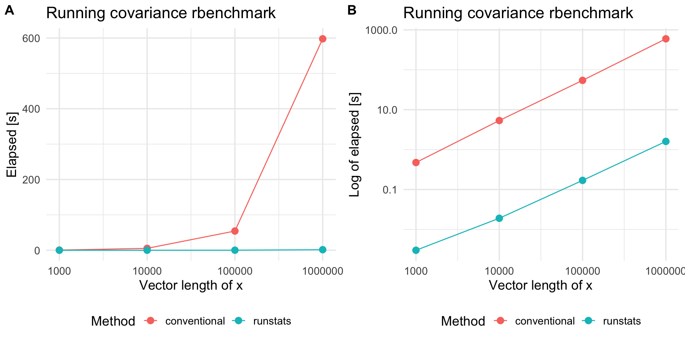

Package runstats provides methods for fast computation of running sample statistics for time series. The methods utilize Convolution Theorem to compute convolutions via Fast Fourier Transform (FFT). Implemented running statistics include:
- mean,
- standard deviation,
- variance,
- covariance,
- correlation,
- euclidean distance.
Website
Package website is located here.
Installation
devtools::install_github("martakarass/runstats")Usage
library(runstats)
## Example: running correlation
x0 <- sin(seq(0, 2 * pi * 5, length.out = 1000))
x <- x0 + rnorm(1000, sd = 0.1)
pattern <- x0[1:100]
out1 <- RunningCor(x, pattern)
out2 <- RunningCor(x, pattern, circular = TRUE)
## Example: running mean
x <- cumsum(rnorm(1000))
out1 <- RunningMean(x, W = 100)
out2 <- RunningMean(x, W = 100, circular = TRUE)Running statistics
To better explain the details of running statistics, package’s function runstats.demo(func.name) allows to visualize how the output of each running statistics method is generated. To run the demo, use func.name being one of the methods’ names:
-
"RunningMean", -
"RunningSd", -
"RunningVar", -
"RunningCov", -
"RunningCor", -
"RunningL2Norm".
## Example: demo for running correlation method
runstats.demo("RunningCor")
## Example: demo for running mean method
runstats.demo("RunningMean")
Performance
We use rbenchmark to measure elapsed time of RunningCov execution, for different lengths of time-series x and fixed length of the shorter pattern y.
library(rbenchmark)
set.seed (20181010)
x.N.seq <- 10^(3:7)
x.list <- lapply(x.N.seq, function(N) runif(N))
y <- runif(100)
## Benchmark execution time of RunningCov
out.df <- data.frame()
for (x.tmp in x.list){
out.df.tmp <- benchmark("runstats" = runstats::RunningCov(x.tmp, y),
replications = 10,
columns = c("test", "replications", "elapsed",
"relative", "user.self", "sys.self"))
out.df.tmp$x_length <- length(x.tmp)
out.df.tmp$pattern_length <- length(y)
out.df <- rbind(out.df, out.df.tmp)
}knitr::kable(out.df)| test | replications | elapsed | relative | user.self | sys.self | x_length | pattern_length |
|---|---|---|---|---|---|---|---|
| runstats | 10 | 0.003 | 1 | 0.003 | 0.000 | 1000 | 100 |
| runstats | 10 | 0.031 | 1 | 0.025 | 0.006 | 10000 | 100 |
| runstats | 10 | 0.385 | 1 | 0.328 | 0.056 | 100000 | 100 |
| runstats | 10 | 5.694 | 1 | 5.509 | 0.171 | 1000000 | 100 |
| runstats | 10 | 126.393 | 1 | 121.007 | 4.954 | 10000000 | 100 |
Compare with a conventional method
To compare RunStats performance with “conventional” loop-based way of computing running covariance in R, we use rbenchmark package to measure elapsed time of RunStats::RunningCov and running covariance implemented with sapply loop, for different lengths of time-series x and fixed length of the shorter time-series y.
## Conventional approach
RunningCov.sapply <- function(x, y){
l_x <- length(x)
l_y <- length(y)
sapply(1:(l_x - l_y + 1), function(i){
cov(x[i:(i+l_y-1)], y)
})
}
set.seed (20181010)
out.df2 <- data.frame()
for (x.tmp in x.list[c(1,2,3,4)]){
out.df.tmp <- benchmark("conventional" = RunningCov.sapply(x.tmp, y),
"runstats" = runstats::RunningCov(x.tmp, y),
replications = 10,
columns = c("test", "replications", "elapsed",
"relative", "user.self", "sys.self"))
out.df.tmp$x_length <- length(x.tmp)
out.df2 <- rbind(out.df2, out.df.tmp)
}Benchmark results
library(ggplot2)
plt1 <-
ggplot(out.df2, aes(x = x_length, y = elapsed, color = test)) +
geom_line() + geom_point(size = 3) + scale_x_log10() +
theme_minimal(base_size = 14) +
labs(x = "Vector length of x",
y = "Elapsed [s]", color = "Method",
title = "Running covariance rbenchmark") +
theme(legend.position = "bottom")
plt2 <-
plt1 +
scale_y_log10() +
labs(y = "Log of elapsed [s]")
cowplot::plot_grid(plt1, plt2, nrow = 1, labels = c('A', 'B'))
Platform information
sessioninfo::platform_info()
#> setting value
#> version R version 3.5.2 (2018-12-20)
#> os macOS Mojave 10.14.2
#> system x86_64, darwin15.6.0
#> ui X11
#> language (EN)
#> collate en_US.UTF-8
#> ctype en_US.UTF-8
#> tz America/New_York
#> date 2019-03-02